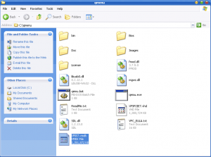

Walkthrough: Setup Multiple IE Virtual Machines On A Mac
One of the most dreaded tasks every web developer faces is testing their pages in the multitude of browsers to make sure everything is working as it should. Until recently, that required having multiple systems lying around. Microsoft only let you install one version of Internet Explorer (IE) at a time due to the fact that it is built deep into the system kernel. Apple used to keep Safari to itself on the Mac operating system leaving the only option of buying Apple hardware to get at the browser.
While there have been several stand-alone versions of IE cobbled together, I just don’t trust them like a fresh native install. And it’s good to see how a site renders with the text rendering engine of the Mac versus the Windows rendering system. Now with virtualization tools like VMWare Fusion, we can have it all.
After installing VMWare and an instance of Windows you may be tempted to set-up another virtual machine specifically for another version of IE. But this is foolish because each XP virtual machine can take up a good chunk of harddrive space. Fortunately there is another way to accomplish this while saving a heap of space.
Below are the steps I took to download the free Virtual Disk images that Microsoft provides with a bare minimum installation of XP or Vista and IE6, IE7, or IE8 Beta. All that we need to do is convert them to a format that VMWare can use and we’ll be in business. The basis of this walkthrough came from Running IE6, IE7 and IE8 on your Mac by Jeremy Gillick. So let’s dive in…
- Go and download the version(s) of IE that you want from Microsoft. This can be anywhere from 330MB – 3GB
- Download Qemu-0.9.1-windows.zip. We’ll use this to convert the Virtual PC disk images to a VMWare compatible virtual disk.
- Start up your virtual XP machine and drag the two files onto the XP desktop.
- Un-zip Qemu-0.9.1-windows.zip to your C:/ drive so it will be easier to find later.
- Speaking of making things easier, it would help to rename the folder Qemu-0.9.1-windows to qmenu. This will come in handy later when we are typing up a storm on the command line.
- Double click IE7-XPSP2_VPC.EXE to extract the image. Save it to C:\qmenu. You should now see a .vhd file in your qmenu folder. Size wise it should be a little over a gig.
- Again, to make things easier to type later we shall rename XP SP2 with IE7.vhd to XPSP2IE7.vhd

- Now it’s time to do the conversion via the command line. Fire it up by going to Start -> Run and typing cmd. Then press enter to launch the command line.
- Navigate to the qmenu directory by typing cd c:\qmenu
- Now type this line to run the actual conversion process: bin\qemu-img.exe convert -f vpc C:\qmenu\XPSP2IE7.vhd -O vmdk XPIE7.vmdk
- You will know it is working because all you will see is a blinking cursor on a new line. The amount of time it takes to finish converting can be anywhere between 10 minutes and an hour depending on your CPU.
- When you get back the C:\qmenu> with the blinking cursor you will know the process has finished. There will also be a new file called XPIE7.vmdk in your qmenu folder.
- Copy XPIE7.vmdk back to OS X by simply dragging it out of the VMWare window and onto your Mac’s desktop.
 - Open VMWare Fusion and create a new virtual machine by going to File -> New.
- Go through the wizard and once you get to the Virtual Hard Disk page, expand Advanced disk options and check Use an existing virtual disk. Use the drop down to select Other… and go find the .vmdk file you just copied over.

- Finish the wizard and boot it up. If prompted to upgrade the virtual harddrive, click Yes.
- Install the VMWare tools by going to Virtual Machine -> Install VMWare Tools as soon as Windows boots up. Now you’re done!


You should have a dedicated IE machine that you can test your web pages in. Mine weighs in at a mere 1.06GB compared to the typical multi-gigabyte requirement of a full install.
Before you go rushing off in a state of web development nirvana, it should be noted that you will have to do this every three months as the Virtual PC images that Microsoft gives out expire. This is done to deter free loaders from using the OS for real work. But since you should only use it for testing purposes, it won’t be a big deal to delete the image and start this process anew every couple of months.
Happy testing!

{kind=link}
{kind=link}
{kind=link}
{kind=link}
{kind=link}
This guide with pictures is gonna make alot of people that Google this very happy. I’m not a Mac guy though, but for Windos innotek VirtualBox works like a charm for linux virtual machines.
Reply
Actually the link I borrowed this from (http://blog.mozmonkey.com/2008.....-mac-os-x/) had a set of instructions for using VirtualBox. I’m not quite that hardcore and VMWare fusion is a dream on my MacBook Pro.
I think it is also worth mentioning that this can all be done on a Mac as opposed to needing Windows for any of this.
Download the files just like normal… but rename the file from xxx.EXE to xxx.zip, then use zipeg: http://www.zipeg.com/ (its free ) to unpack the vhd file. This will take about 15 minutes on a MBP.
Now you need to download and install Q.app. (also free) http://www.kju-app.org/
Once that is done.. open terminal, go to the directory with the vhd file and type..
/Applications/Q.app/Contents/MacOS/qemu-img convert -O vmdk -f vpc XPSP3withIE6.vhd XPSP3withIE6.vmdk
Remember to install VMWare Tools as soon as you boot up yer new image.
notice there are no spaces in the filenames: XPSP3withIE6.vhd. That is because I removed the spaces in the filename just before running the Q.app command.
Reply
I can verify this worked for me (Leopard 10.5.5, Mac Pro).
Only thing I needed was an XP ISO for network drivers.
Very gratefuly for this help. I’m trying to reproduce a problem reported by a customer who works for the government. On my WinXP system (VM) using his steps and files, no problem, so it sounds like something different with our environments, right? He says, no problem, you can download my environment from this website that has links to standard VMs for federal use. Only problem is, their .vhd and I’m using VMWare Fusion. The file is converting now, so I’ll be able to have a go at his issue, (when I have a fresh head tomorrow). Thanks very much!
Reply
No prob. Hope everything works for ya.
I’d like to run Windows 7 beta on my MBP w/ VMWare Fusion 2. Will this method fly with Windows 7?
Reply
It should. Give it a whirl and let me know.
Hmm, ok, so I followed the directions by screwlewse and when I run my VM – it’s asking me to Activate my Windows version!? What the heck! What do I do now?
Reply
Is it asking you for a serial number or something? If I remember to activate Windows you just click on a button and it does its thing over the Internet.
Yep – it’s asking for a serial #
Weird. I never experienced that.
Great walkthrough, thanks a lot.
However, I have the same problem as Joel – followed the steps by screwlewse and it’s asking for activation and serial number. It was okay first time it started, but after restart (required after installing VMTools) it won’t let me login at all.
Reply
The Activation issue is one presented anytime the VPCs are converted to run in another Virtual Machine instead of M$’s ! Thanks M$ ! Anyways, there are one of two ways to make this work:
1) Find someone with the older, non-expiring, non-license-requiring VPC images for IE6, IE7 and IE8
2) Wait to see if M$ releases updated VPC images (since they expire Jan 01, 2010 it should be soon).. and hopefully they will fix this oversight..
If anyone has the aforementioned ‘older, non-expiring, non-license-requiring VPC images’ – PLEASE let me know ! 😀
Reply
[…] out the idea of using some images Microsoft makes available with different versions of IE on each (http://www.russellheimlich.com.....-on-a-mac/) HAH Results: If you read the last couple of comments on the referenced blog, you’ll see that […]
Hmm it seems like your blog ate my first comment (it was super long) so I guess I’ll just sum it up what I submitted and say, I’m thoroughly enjoying your blog. I too am an aspiring blog blogger but I’m still new to everything. Do you have any points for first-time blog writers? I’d definitely appreciate it.
Reply